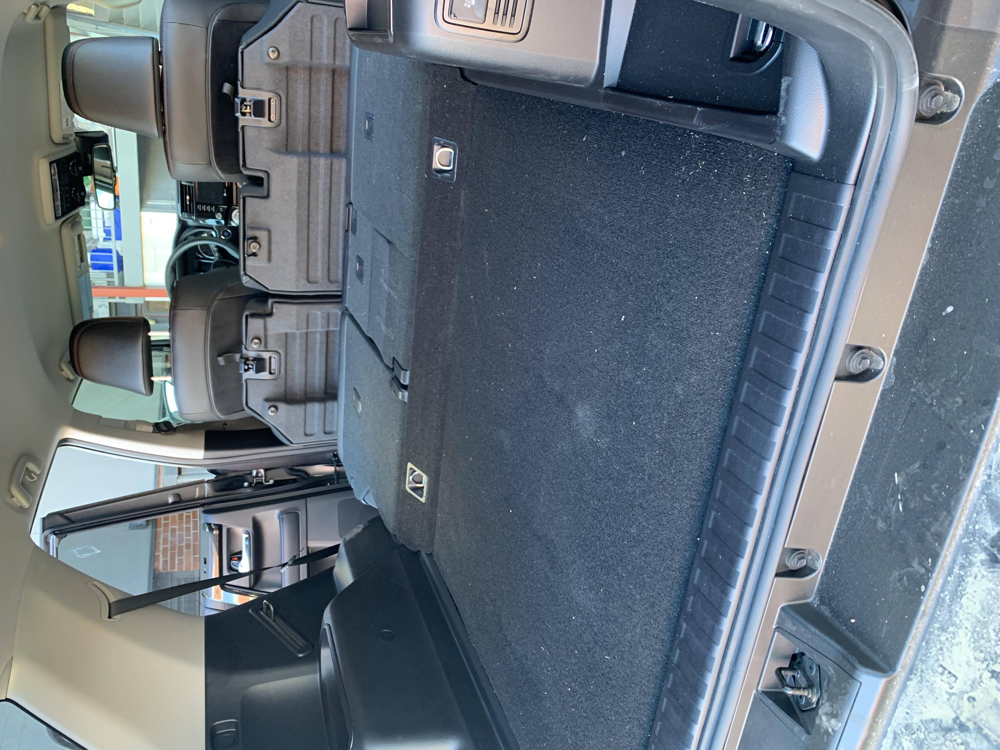
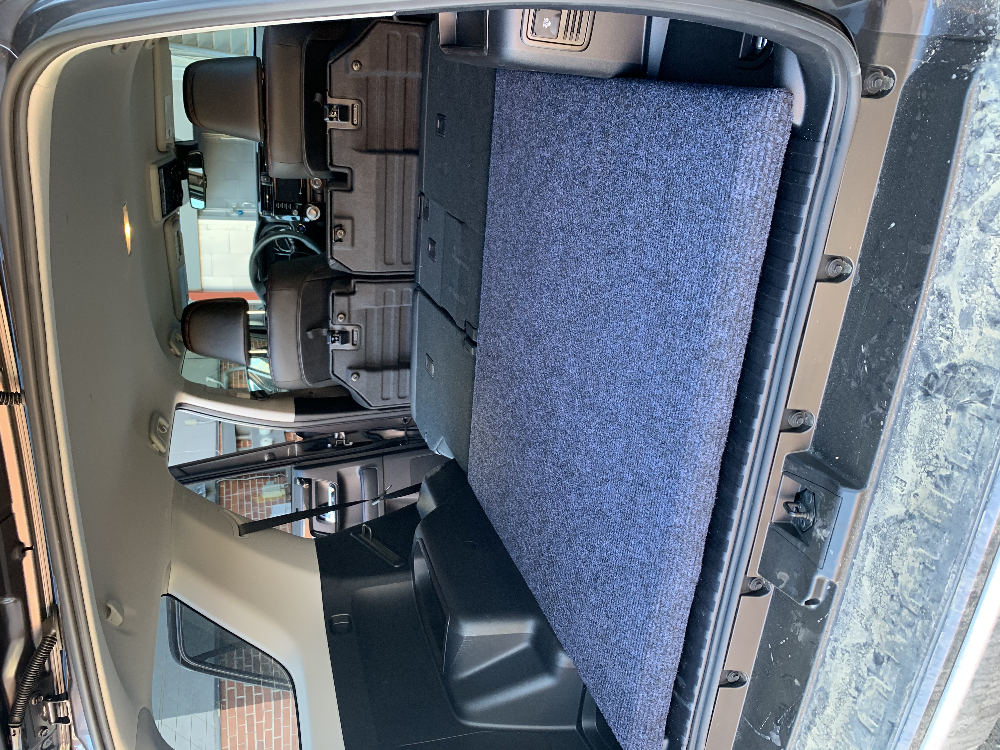
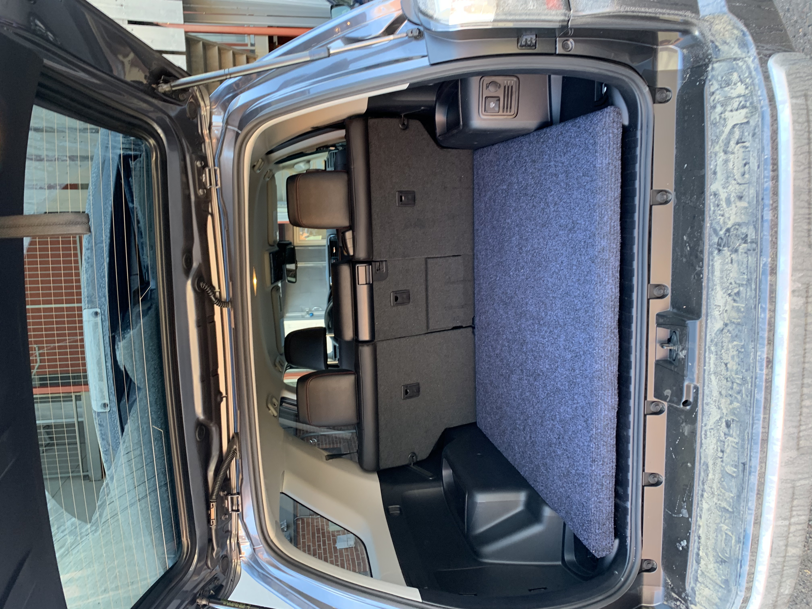
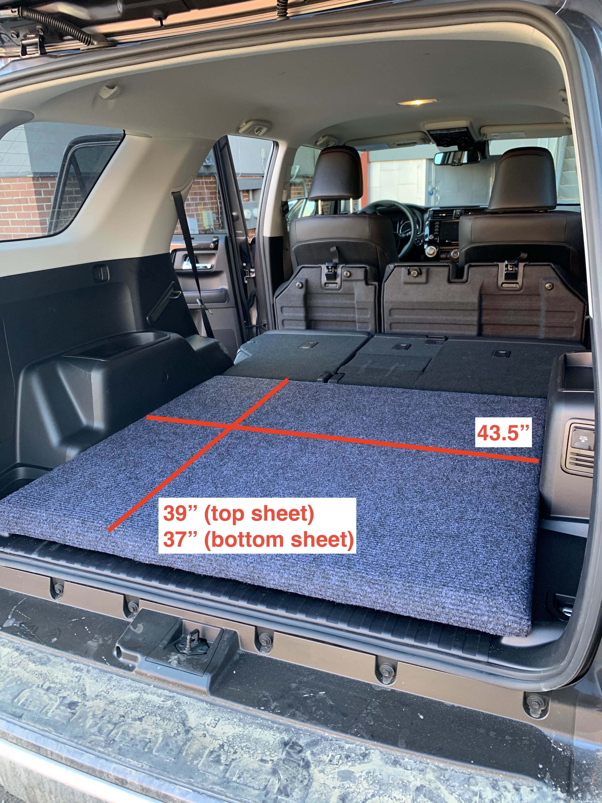
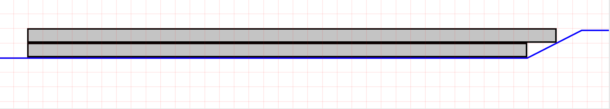
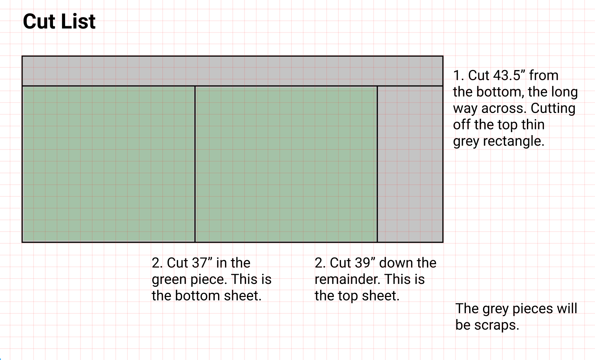
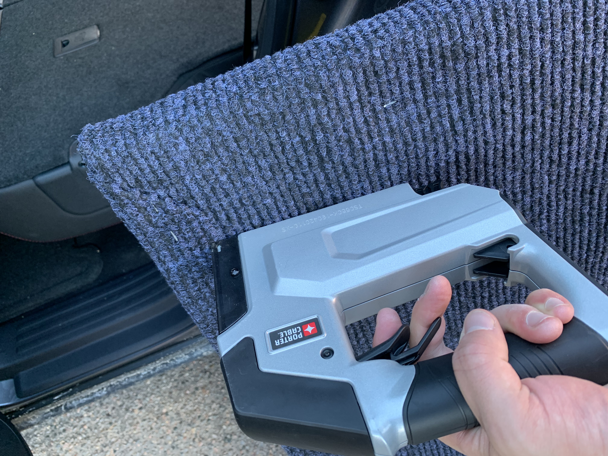
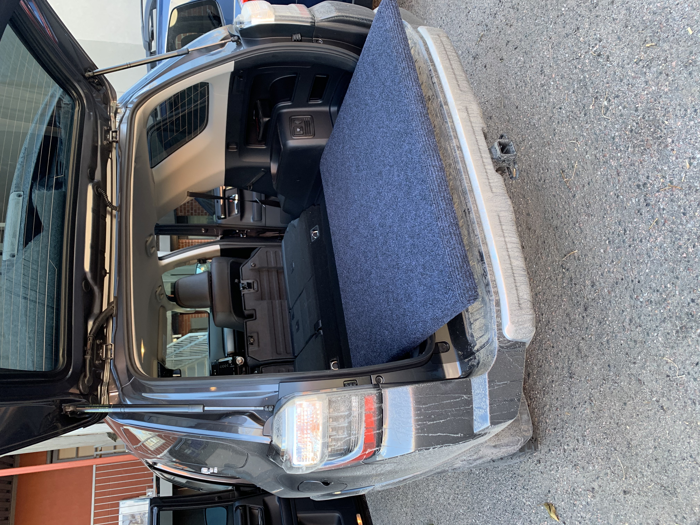

I love to sleep in my car. It's the most convenient way to spend a night or two away from home, often far away from civilization, often biking or skiing.
With my Subaru Outback, I could simply put the seats down and sleep on a foam pad. Easy! However, I just switched to a Toyota 4Runner and there was a problem. The bed isn't flat!

4Runners (gen5) have this nasty angled part in the middle, with a 1.5" difference between the trunk section and where the seats fold down. So I set out to make it flat.
My Design Criteria
- Cheep. This can be done for less than $40.
- Easy to make, easy to remove.
- No modifications to the vehicle itself.
- Can be done without access to a workshop.
Here is the result!

It takes up only 1.5" of vertical trunk space and doesn't need to be adjusted when you put your seats up.

How To Build It
What's needed:
- 4x8' Plywood Sheet 3/4 inch thick. $20
- Outdoor Carpet (or rubber mat if you don't have a staple gun) $15
- Staple Gun (optional)
Step 1: Cut The Plywood
This design takes a single sheet of plywood (4'x8'x3/4") and cuts it into 2 sheets which are stacked on top of each other to make a 1.5" tall surface. Because the shape we want to fill has an angle on one side, the top piece is cut 2" inches longer to fill the angled gap. See the images below.

How it sits in the bed:

This only takes 3 cuts to complete, and your local Home Depot or Lowes will do it for you if you ask nicely!

Step 2: Secure The Top and Bottom Sheets Together
I simply screwed them together with a few 1 1/4" screws.
Step 3: Carpet The Top Layer
I laid the structure upside down on top of an outdoor carpet. Pulled the carpet around all sides to the back, and stapled it in place. This way all the seams and staples are on the bottom.

(If you don't have a staple gun, and don't care about seeing the plywood when your trunk is open. simply put a rubber entryway mat over your sheets and cut it to size, Lowes sells 4'x6' foot mats which are large enough for $19.)
Step 4: Slide It In Place

Done!
I wanted to share this design because it is the simplest and least expensive one I could find, which doesn't really require any tools. Let me know if you build one!